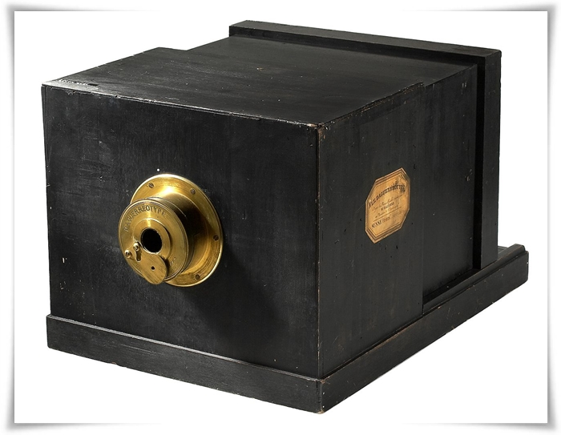

A primeira câmera fotográfica do mundo
Joseph Nicephore Niepce foi, em 1793, uma das primeiras pessoas a conseguir “imprimir” a luz em uma superfície sem usar qualquer tipo de tinta, porém as imagens desapareciam depois de um tempo. Ele usava uma câmara obscura, parecida com o que conhecemos hoje por pinhole, e um tipo especial de papel com cloreto de prata.
Em 1824 ele conseguiu encontrar um método que permitia mais duração das imagens e em 1826 foi registrada a primeira fotografia de duração indefinida (imagem acima), que existe até hoje. Como é possível perceber, no entanto, a qualidade ainda era baixíssima; além disso, o processo todo de captura levava horas.
Em 1834, Henry Fox Talbot criou uma versão bem primitiva do que posteriormente seria o negativo fotográfico, que ajudaria a tornar mais popular a fotografia. Mas foi apenas em 1849 que Louis Daguerre trouxe a arte, que era até então totalmente experimental e complexa, a um novo patamar.
